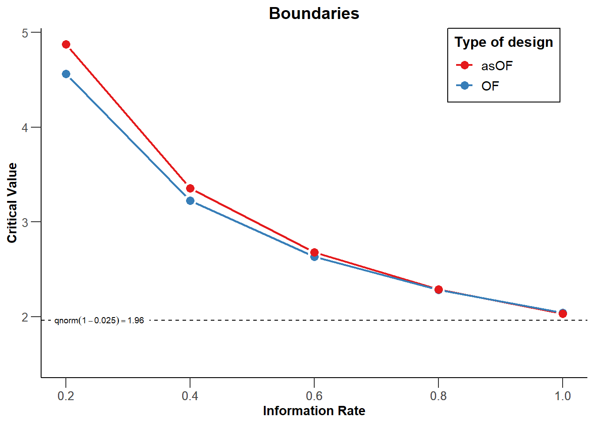

14 Sequential Analysis
Imagine you design a study, determine the sample size you will collect based on an a-priori power analysis with a desired 80% power, have collected data, analyzed the results, and you find a p-value for your primary hypothesis of p = 0.09. You believe this might be a Type 2 error, and you are willing to collect more data to examine your hypothesis. In the past, researchers would often use a practice called optional stopping where they would continue the data collection, without adjusting the alpha level for multiple comparisons (Fiedler & Schwarz, 2015Fiedler, K., & Schwarz, N. (2015). Questionable Research Practices Revisited. Social Psychological and Personality Science, 1948550615612150. https://doi.org/10.1177/1948550615612150; John et al., 2012John, L. K., Loewenstein, G., & Prelec, D. (2012). Measuring the prevalence of questionable research practices with incentives for truth telling. Psychological Science, 23(5), 524–532.). However, this inflates the Type 1 error rate. Luckily, there is a solution to be able to stop the data collection when an effect is significant, and continue up to the maximum sample size you are willing to collect when it is not significant: sequential analysis. In sequential analysis a researcher designs a study such that they are able to perform interim analyses, say when 25%, 50%, and 75% of the data is collected. At each interim analysis a test is performed at a corrected alpha level, that over all planned analyses maintains the desired Type 1 error rate. For example, each of four analyses might be performed using an alpha level of 0.0091. The analysis at the first interim analysis yields a p = 0.21, data collection would continue. If at the second interim analysis a p = 0.007 is observed, data collection is terminated, and the null hypothesis is rejected. Even though the researcher repeatedly analyses the data, the corrected alpha level guarantees that the Type 1 error rate remains at 5%.
Although the use of sequential analyses is not common, they have a long history. As early as 1929, Dodge and Romig realized that analyzing the data sequentially was more efficient than doing so once (Dodge & Romig, 1929Dodge, H. F., & Romig, H. G. (1929). A Method of Sampling Inspection. Bell System Technical Journal, 8(4), 613–631. https://doi.org/10.1002/j.1538-7305.1929.tb01240.x). Wald, who popularized the idea of sequential tests of hypotheses in (1945Wald, A. (1945). Sequential tests of statistical hypotheses. The Annals of Mathematical Statistics, 16(2), 117–186.), performed his work during the second world war. He was only allowed to publish his findings after the war had ended, because as he writes in a historical note:
Because of the substantial savings in the expected number of observations effected by the sequential probability ratio test, and because of the simplicity of this test procedure in practical applications, the National Defense Research Committee considered these developments sufficiently useful for the war effort to make it desirable to keep the results out of the reach of the enemy, at least for a certain period of time. The author was, therefore, requested to submit his findings in a restricted report which was dated September, 1943.
In other words, we have a method that so substantially increases the efficiency of hypothesis tests that it would not be shared with the enemy during war time - yet few researchers outside of medicine currently use it! In medicine, efficiency is not just a matter of money, but also of saving lives. If a drug shows it substantially increases the probability that people will survive a disease, it is deemed ethical to terminate a trial early, and administer the treatment to patients enrolled in the control group as well. Sequential analyses are established procedures, and have been developed in great detail over the last decades (Jennison & Turnbull, 2000Jennison, C., & Turnbull, B. W. (2000). Group sequential methods with applications to clinical trials. Chapman & Hall/CRC.; Proschan et al., 2006Proschan, M. A., Lan, K. K. G., & Wittes, J. T. (2006). Statistical monitoring of clinical trials: A unified approach. Springer.; Wassmer & Brannath, 2016Wassmer, G., & Brannath, W. (2016). Group Sequential and Confirmatory Adaptive Designs in Clinical Trials. Springer International Publishing. https://doi.org/10.1007/978-3-319-32562-0). Here, we will explain the basics of how to control error rates in sequential analyses, and perform a-priori power analysis and compare when sequential designs will be more or less efficient than fixed designs.
14.1 Choosing alpha levels for sequential analyses.
In sequential designs researchers will collect data with the plan to analyze the data at various times during the data collections. For example, a researcher plans to collect data from 200 participants and plans to analyse the data after 100 participants are collected, and once again after 200 participants are collected. Each analyses is called a look, so there are in total 2 looks at the data planned, with one interim analysis, and one final analysis. Not all looks have to occur in practice. If the analysis reveals a statistically significant result at look 1, data collection can be terminated. It is also possible to stop the data collection at look 1 because a predicted effect is absent, and continuing the data collection is not deemed worthwhile, which is called stopping for futility.
If one would analyze the data at multiple looks without correcting the alpha level, the Type 1 error rate would inflate (Armitage et al., 1969Armitage, P., McPherson, C. K., & Rowe, B. C. (1969). Repeated significance tests on accumulating data. Journal of the Royal Statistical Society: Series A (General), 132(2), 235–244.). As Armitage and colleagues show, with equally spaced looks, the alpha level inflates to 0.142 after 5 looks, 0.374 after 100 looks, and 0.530 after 1000 looks. Looking at the data twice is conceptually similar to deciding if a result is significant if one of two dependent variables shows a statistically significant effect. However, an important difference is that in the case of sequential analyses the multiple tests are not independent, but dependent. A test at look to combines the old data collected at look 1 with the new data at look 2. This means the Type 1 error rate inflates less quickly compared to independent tests, and we will see below this enables more efficient and flexible solutions to controlling error rates.
The solution to control Type 1 error inflation is again conceptually similar to a multiple comparison problem. By lowering the alpha level at each look, the Type 1 error rate can be controlled. They way the alpha level is reduced differs, however. To control the Type 1 error rate, we would lower the alpha level for each test, for example using the Bonferroni procedure where each test would be performed at \(\alpha/2\). In sequential analyses we similarly adjust the alpha level. It is even possible to just use a Bonferroni correction (Wassmer & Brannath, 2016Wassmer, G., & Brannath, W. (2016). Group Sequential and Confirmatory Adaptive Designs in Clinical Trials. Springer International Publishing. https://doi.org/10.1007/978-3-319-32562-0). But because the data is dependent (at look 2 we combine the data we collected at look 1 with the new data, so the data covary) the way to correct alpha levels can be done more efficiently. If you combine multiple looks at the data with multiple comparisons, you would first correct the alpha level for multiple looks, and then correct the alpha level at each look for the multiple comparison correction. Because the alpha level is corrected, it does not matter which statistical test you perform at each look, all that matters is that the p-value is compared to the corrected alpha level.
14.1.1 Pocock correction
We will start with the Pocock correction, which is the simplest way to correct the alpha level for multiple looks. Conceptually, it is very similar to the Bonferroni correction. We can see at the Wikipedia page for the Pocock correction that with 2 interim analyses the alpha level for each look is 0.0294, for three looks it is 0.0221, for 4 looks it is 0.0182, and for 5 looks it is 0.0158. We see the correction is slightly more efficient than using a Bonferroni correction (in which case the alpha levels would be 0.025, 0.0167, 0.0125, and 0.01). Applying the Pocock procedure requires 1) specifying the number of looks in advance, and 2) equally spaced looks, where each batch of observations has the same size (e.g., looking after 25, 50, 75 and 100 observations).
Note that we can accurately calculate the alpha levels that should be used to 4 digits after the decimal points, but the alpha level you will observe for all tests in your lifetime probably has too much variability to worry too much about anything after 3 digits after the decimal point (and maybe even 2). We will compute alpha levels in this tutorial with higher precision than you need to care about in real life.
We will use multiple packages in R to compute corrected alpha levels for each look, such as gsDesign, rpact, and ldbounds. RPact is also available as a Shiny app.
# Use Rpact to specify a design with 2 looks and Pocock correction
design <- getDesignGroupSequential(
kMax = 2,
typeOfDesign = "P",
sided = 2,
alpha = 0.05
)
summary(design)## Sequential analysis with a maximum of 2 looks (group sequential design)
##
## Stage 1 2
## Information rate 50% 100%
## Efficacy boundary (z-value scale) 2.178 2.178
## Cumulative alpha spent 0.0294 0.0500
## Two-sided local significance level 0.0294 0.0294Rpact makes it easy to plot the boundaries (based on the critical values) for each look. We see the critical values are higher than the 1.96 we would use for a fixed design with a 5% alpha level, namely: 2.1782721, 2.1782721.
Figure 14.1: Plot of critical boundaries at each look for a 2 look design with a Pocock correction.

We can also use the gsDesign package (not that the gsDesign package reports one-sided alpha levels, and thus returns a one-sided alpha level of 0.0147, instead of the two-sided alpha level 0.294. You will need to double the alpha level for a two-sided test (or just use Rpact, which reports two-sided alpha levels when asked).
seq_design <- gsDesign(
k = 2, # k = number of looks = 2
test.type = 2,
alpha = .025, # gsDesign computes one-sided alpha levels, so we halve alpha
sfu = "Pocock"
)
gsBoundSummary(seq_design)## Analysis Value Efficacy Futility
## IA 1: 50% Z 2.1783 -2.1783
## N/Fixed design N: 0.55 p (1-sided) 0.0147 0.0147
## ~delta at bound 0.9061 -0.9061
## P(Cross) if delta=0 0.0147 0.0147
## P(Cross) if delta=1 0.5893 0.0000
## Final Z 2.1783 -2.1783
## N/Fixed design N: 1.1 p (1-sided) 0.0147 0.0147
## ~delta at bound 0.6407 -0.6407
## P(Cross) if delta=0 0.0250 0.0250
## P(Cross) if delta=1 0.9000 0.0000It is also possible to recreate these analyses in the GroupSeq package, which has a GUI based interface. Run ‘groupseq(mode = “g”)’ in R, and the three screenshots below create the same output.
Figure 14.2: Screenshot of the GroupSeq GUI to choose a task.

Figure 14.3: Screenshot of the GroupSeq GUI to compute bounds.

Figure 14.4: Screenshot of the output of the GroupSeq GUI.

The analysis can also be performed in the RPACT shiny app which also allows users to create all plots through simple menu options, and download a complete report of the analyses (e.g., for a preregistration document). The RPACT shiny app is the easiest resource to use from all options discussed here.
Figure 14.5: Screenshot of rpact Shiny app.

14.2 Comparing Spending Functions
It can be useful to explicitly compare different types of designs. As explained before, the Pocock correction maintains a fixed alpha level at each look. The O’Brien-Fleming correction uses a higher threshold for early looks, but has the advantage that the final look occurs closer to the uncorrected alpha level. Because the alpha level is very similar at the last look, so is the total required sample size. Lowering the alpha level means the sample size needs to be increased to maintain the same desired level of statistical power, so different spending functions also require a different increase in the final sample size (to compensate for the lower alpha level, while maintaining the same statistical power). Sequential designs always need to be planned for a slightly larger total sample size at the final look, although as we will see below, because we can expect to stop at earlier looks, on average sample size will be smaller when using sequential designs compared to fixed designs.
Figure 14.6: Comparison of the Pocock and O’Brien-Fleming boundaries.

We see that at each of the 5 looks the critical value for our test is higher than 1.96 (the critical value without correcting for multiple looks, assuming a normal distribution, indicated by the black dashed line). The Pocock correction (P, blue line) has the same critical value at each look: 2.4131803, 2.4131803, 2.4131803, 2.4131803, 2.4131803, while the critical values decrease for each look with the O’Brien-Fleming correction (OF, red line): 4.5617423, 3.2256389, 2.6337232, 2.2808712, 2.0400732. The first three looks use an alpha level that is stricter than the Pocock spending function, but the last two use a much less strict threshold, and the last look occurs at a level quite close to an alpha level without any correction. As we will see below, this is quite efficient, without requiring a noticeable increase in the sample size due to a lower alpha level at the last look.
14.3 Sample Size for Sequential Designs
Sequential designs require somewhat more participants than a fixed design at the final look, depending on how much the alpha level at this look is lowered due to the correction for multiple comparisons. Due to early stopping, sequential designs will on average require less participants.
Let’s first examine how many participants we would need in a fixed design, where we only analyze our data once. We have an alpha level of 0.05, and a Type 2 (beta) error of 0.1 - in other words, the desired power is 90%. We will perform one test, and assuming a normal distribution our critical Z-score would be 1.96, for an alpha level of 5%.
# specify the design
seq_design <- getDesignGroupSequential(
kMax = 1,
typeOfDesign = "P",
sided = 2,
alpha = 0.05,
beta = 0.1
)
# print a summary
summary(seq_design)## Fixed sample analysis
##
## Stage Fixed
## Efficacy boundary (z-value scale) 1.960
## Two-sided local significance level 0.0500# perform a power analysis using rpact
# By setting the alternative to 0.5 and the stDev to 1, we assume a Cohen's d of 0.5 for the alternative hypothesis.
power_res <- getSampleSizeMeans(
design = seq_design,
groups = 2,
alternative = 0.5,
stDev = 1,
allocationRatioPlanned = 1,
normalApproximation = FALSE)
power_res## Design plan parameters and output for means:
##
## Design parameters:
## Significance level : 0.0500
## Type II error rate : 0.1
## Two-sided power : FALSE
## Test : two-sided
##
## User defined parameters:
## Alternatives : 0.5
##
## Default parameters:
## Normal approximation : FALSE
## Mean ratio : FALSE
## Theta H0 : 0
## Standard deviation : 1
## Treatment groups : 2
## Planned allocation ratio : 1
##
## Sample size and output:
## Number of subjects fixed : 170.1
## Number of subjects fixed (1) : 85.0
## Number of subjects fixed (2) : 85.0
## Lower critical values (effect scale) : -0.303
## Upper critical values (effect scale) : 0.303
## Local two-sided significance levels : 0.0500
##
## Legend:
## (i): values of treatment arm iWe see we need 85 participants in each group, (or 86, since we always round the number of observations up, as we can not collect 0.03 of a participant), and so we need 172 participants in total (see G*Power, which rounds up values correctly). Because this is a fixed design, we can also compute this sample size using the pwr package in R or any other power analysis software.
## [1] 85.03128We can now examine our design above with 2 looks, a Pocock correction, a 2 sided test with an alpha of 0.05. We will look 2 times, and expect a true effect of d = 0.5.
# Our 2 look design
seq_design <- getDesignGroupSequential(
kMax = 2,
typeOfDesign = "P",
sided = 2,
alpha = 0.05,
beta = 0.1
)
# Compute the sample size we need
power_res <- getSampleSizeMeans(
design = seq_design,
groups = 2,
alternative = 0.5,
stDev = 1,
allocationRatioPlanned = 1,
normalApproximation = FALSE)
summary(power_res)## Sample size calculation for a continuous endpoint
##
## Sequential analysis with a maximum of 2 looks (group sequential design).
## The sample size was calculated for a two-sample t-test (two-sided),
## alternative = 0.5, standard deviation = 1, allocation ratio = 1, and power 90%.
##
## Stage 1 2
## Information rate 50% 100%
## Efficacy boundary (z-value scale) 2.178 2.178
## Number of subjects 94 188
## Cumulative alpha spent 0.0294 0.0500
## Cumulative power 0.5893 0.9000
## Two-sided local significance level 0.0294 0.0294
## Lower efficacy boundary (t) -0.458 -0.321
## Upper efficacy boundary (t) 0.458 0.321
## Exit probability for efficacy (under H0) 0.0294
## Exit probability for efficacy (under H1) 0.5893
##
## Legend:
## (t): approximate treatment effect scaleIt is important to know that rpact returns the total number of subjects at look 1 (94, so 94/2 = 47 in each group), and the total sample size at look 2 (188, so 188/2 = 94 in each group). This means that at the second look, we are now collecting 188 instead of 172 participants. This is a consequence of lowering our alpha level at each look (from 0.05 to 0.0294). To compensate for the loss of power, we need to increase our sample size. HOwever, this is compensated by the fact that sometimes we will stop after look 1, and thus on average we will collect less participants (even though we might sometimes collect more participants than we would have, had we not used a sequential design). Rpact also computes the expected number of participants, in the long run, if the true effect size is d = 0.5.
## [1] 131.9571So, in the long run, if the true effect size is d = 0.5, we will collect 132 observations (66 per condition), instead of 172 in total (or 86 per condition). Because power is a curve, and the true effect size is always unknown, it is useful to plot power across a range of possible effect sizes, so that we can explore the expected sample size, in the long run, if we use a sequential design, for different true effect sizes.
# Use getPowerMeans and set max N to 188 based on analysis above
sample_res <- getPowerMeans(
design = seq_design,
groups = 2,
alternative = seq(0,1,0.1),
stDev = 1,
allocationRatioPlanned = 1,
maxNumberOfSubjects = 188, #rounded up from 187.0829
normalApproximation = TRUE)
plot(sample_res, type = 6)
The blue line indicates the expected number of observations we need to collect. Not surprisingly, when the true effect size is 0, we will almost always continue data collection to the end. We will only stop if we observe a Type 1 error, which is rare, and thus the expected number of observations is very close to 120. On the other side of the graph we see the scenario for when the true effect size is d = 1. With such a large effect size, we will have high power at our first look, and we will almost always be able to stop at the first look. If the true effect size is 0.5, we see we can expect to collect 132 participants on average.
The Pocock correction leads to a substantially lower alpha level at the last look, which requires an increase in sample size to compensate. As we saw before, the O’Brien-Flemming spending function does not require such a severe reduction in the alpha level at the last look. Let’s see how well this performs. With 2 looks, this design would not need an increase in sample size at all, yet lower the expected number of observations we would collect to 145. However, let’s add 2 additional looks at the data, for 4 looks in total.
# Now a 4 look OF design
seq_design <- getDesignGroupSequential(
kMax = 4,
typeOfDesign = "OF",
sided = 2,
alpha = 0.05,
beta = 0.1
)
summary(seq_design)## Sequential analysis with a maximum of 4 looks (group sequential design)
##
## Stage 1 2 3 4
## Information rate 25% 50% 75% 100%
## Efficacy boundary (z-value scale) 4.049 2.863 2.337 2.024
## Cumulative alpha spent <0.0001 0.0042 0.0209 0.0500
## Two-sided local significance level <0.0001 0.0042 0.0194 0.0429power_res <- getSampleSizeMeans(
design = seq_design,
groups = 2,
alternative = 0.5,
stDev = 1,
allocationRatioPlanned = 1,
normalApproximation = FALSE)
summary(power_res)## Sample size calculation for a continuous endpoint
##
## Sequential analysis with a maximum of 4 looks (group sequential design).
## The sample size was calculated for a two-sample t-test (two-sided),
## alternative = 0.5, standard deviation = 1, allocation ratio = 1, and power 90%.
##
## Stage 1 2 3 4
## Information rate 25% 50% 75% 100%
## Efficacy boundary (z-value scale) 4.049 2.863 2.337 2.024
## Number of subjects 44 87 131 174
## Cumulative alpha spent <0.0001 0.0042 0.0209 0.0500
## Cumulative power 0.0080 0.2930 0.6960 0.9000
## Two-sided local significance level <0.0001 0.0042 0.0194 0.0429
## Lower efficacy boundary (t) -1.370 -0.631 -0.415 -0.309
## Upper efficacy boundary (t) 1.370 0.631 0.415 0.309
## Exit probability for efficacy (under H0) <0.0001 0.0042 0.0167
## Exit probability for efficacy (under H1) 0.0080 0.2850 0.4031
##
## Legend:
## (t): approximate treatment effect scalesample_res <- getPowerMeans(
design = seq_design,
groups = 2,
alternative = seq(0,1,0.1),
stDev = 1,
allocationRatioPlanned = 1,
maxNumberOfSubjects = 174,
normalApproximation = TRUE)We see that with 4 looks, we will not need to increase the maximum sample size a lot, as we only need 174 instead of 172 participants.
## [1] 173.8317There is a noticeable reduction in the average number of samples we can expect to collect, if the true effect size is d = 0.5.
## [1] 130.5056If we plot this expected sample size across different true effect sizes, we see that we become more efficient - only at the cost of 1) analyzing our data 4 times, and 2) needing to preregister our analysis plan. Preregistration is required, because sequential analyses give a lot of additional freedom that can possibly inflate error rates substantially. So performing computations as performed here, and preregistering your analysis plan, is required - but worth it.

We can redo the power analysis in for the original 2 look design in gsDesign. The graph shows that if the true effect size is d = 0.5 we have approximately 59% power after the first look, and 90% power after the second look, given our adjusted alpha level.
seqdesign <- gsDesign(
k = 2, # k = number of looks = 2
test.type = 2,
alpha = .025,
beta = 0.1,
sfu = "Pocock",
# gsDesign calculates d as a within subjects d.
# We need the /sqrt(2) to turn it from d_z into d
delta = 0.5/sqrt(2),
delta0 = 0,
delta1 = 0.5
) # spending function = Pocock
# All required info is in:
seqdesign## Symmetric two-sided group sequential design with
## 90 % power and 2.5 % Type I Error.
## Spending computations assume trial stops
## if a bound is crossed.
##
##
## Analysis N Z Nominal p Spend
## 1 47 2.18 0.0147 0.0147
## 2 93 2.18 0.0147 0.0103
## Total 0.0250
##
## ++ alpha spending:
## Pocock boundary.
##
## Boundary crossing probabilities and expected sample size
## assume any cross stops the trial
##
## Upper boundary (power or Type I Error)
## Analysis
## Theta 1 2 Total E{N}
## 0.0000 0.0147 0.0103 0.025 91.1
## 0.3536 0.5893 0.3107 0.900 65.2
##
## Lower boundary (futility or Type II Error)
## Analysis
## Theta 1 2 Total
## 0.0000 0.0147 0.0103 0.025
## 0.3536 0.0000 0.0000 0.000# We can look at the sample sizes as expected compared to a fixed design
plot(seqdesign, plottype = 2)
14.3.1 Alpha spending functions
The Pocock and O’Brien-Fleming spending functions we discussed so far have an important limitation (Proschan et al., 2006Proschan, M. A., Lan, K. K. G., & Wittes, J. T. (2006). Statistical monitoring of clinical trials: A unified approach. Springer.). They require a pre-specified number of looks (e.g., 4) that is equally spaced (e.g., after 25%, 50%, 75%, and 100%). It is not always possible to stop data collection exactly after for example the 50th participant, because you need to pause data collection to analyze the data, which might not be possible if additional sessions are scheduled on the day the 50th observation is collected. An important contribution to the sequential testing literature was made by Lan and DeMets (1983Lan, K. K. G., & DeMets, D. L. (1983). Discrete Sequential Boundaries for Clinical Trials. Biometrika, 70(3), 659. https://doi.org/10.2307/2336502) who created alpha spending functions, where the boundary at the decision time does not depend on the future decision times or the total number of decision times.
We see the O’Brien-Fleming-like alpha spending function is quite similar to the discrete O’Brien-Fleming bounds.
Figure 14.7: Comparison of the O’Brien-Fleming boundaries and the O’Brien-FLiming-like alpha spending function.
There is a wide range of alpha spending functions possible. In addition to a Pocock-type and O’Brien-Fleming-type alpha spending function RPACT has the Kim & DeMets alpha spending function and the Hwang, Shi & DeCani alpha spending function, but users can also specify a custom spending function. Again, the main benefit of these spending functions is that neither the number nor the timing of the looks needs to be specified in advance, which makes alpha spending approaches much more flexible. However, it is important that the decision to perform an interim analysis is not based on collected data, as this can still increase the Type 1 error rate.
14.3.2 Updating Boundaries During an Experiment
Although alpha spending functions control the Type 1 error rate even when there are deviations from the pre-planned looks, this does require recalculating the boundaries based on the amount of information that has been observed. In this example, we follow an RPACT vignette. Imagine a two-sided design with an O’Brien-Fleming-type alpha-spending function, and alpha of 0.025, a desired power of 90%, with 3 looks, planned when 50%, 75%, and 100% of our maximum sample has been collected.
# Original design:
seq_design <- getDesignGroupSequential(
sided = 2,
kMax = 3,
alpha = 0.05,
beta = 0.1,
informationRates = c(0.5, 0.75, 1),
typeOfDesign = "asOF"
)
# Initial sample size calculation
sampleSizeResult <- getSampleSizeMeans(
design = seq_design,
groups = 2,
alternative = 0.5,
stDev = 1,
allocationRatioPlanned = 1,
normalApproximation = FALSE
)
# Summarize design
summary(sampleSizeResult)## Sample size calculation for a continuous endpoint
##
## Sequential analysis with a maximum of 3 looks (group sequential design).
## The sample size was calculated for a two-sample t-test (two-sided),
## alternative = 0.5, standard deviation = 1, allocation ratio = 1, and power 90%.
##
## Stage 1 2 3
## Information rate 50% 75% 100%
## Efficacy boundary (z-value scale) 2.963 2.359 2.014
## Number of subjects 87 130 174
## Cumulative alpha spent 0.0031 0.0193 0.0500
## Cumulative power 0.2580 0.6853 0.9000
## Two-sided local significance level 0.0031 0.0183 0.0440
## Lower efficacy boundary (t) -0.656 -0.419 -0.308
## Upper efficacy boundary (t) 0.656 0.419 0.308
## Exit probability for efficacy (under H0) 0.0031 0.0162
## Exit probability for efficacy (under H1) 0.2580 0.4273
##
## Legend:
## (t): approximate treatment effect scaleThe a-priori power analysis shows that, assuming an effect size of 0.5, we plan to look after 87, 130, 174 observations. Now imagine that due to logistical issues, we do not have to ability to analyze the data until we have collected data from 95, instead of 87, participants. So our first look at the data does not occur at 50% of our sample, but at 95/174 = 54.6%. We can recalculate the alpha levels we should use for this and future looks, and update our sample size calculation. This reveals we should use an alpha level of 0.0048 for the current look (instead of 0.0031). and the next look should occur after 131 participants in total, not 130. We see the differences are not very substantial, but if the deviation from the planned looks increases, the changes might become more impactful. Note that even if the number of looks was not pre-planned, we would use similar calculations at each look, but instead increase the number of looks (e.g., perform an analysis with 1 interim look at time = 95/174, and if the second look occurs after 146 participants, we would run an analysis with two interim looks, one at 95/174 and a second at 146/174, see Proschan et al., 2006, chapter 5).
seq_design_2 <- getDesignGroupSequential(
sided = 2,
kMax = 3,
alpha = 0.05,
beta = 0.1,
informationRates = c(95/174, 0.75, 1),
typeOfDesign = "asOF"
)
summary(seq_design_2)## Sequential analysis with a maximum of 3 looks (group sequential design)
##
## Stage 1 2 3
## Information rate 54.6% 75% 100%
## Efficacy boundary (z-value scale) 2.818 2.370 2.015
## Cumulative alpha spent 0.0048 0.0193 0.0500
## Two-sided local significance level 0.0048 0.0178 0.0439# Update power analysis
power_update_1 <- getPowerMeans(
design = seq_design_2,
groups = 2,
alternative = 0.5,
stDev = 1,
allocationRatioPlanned = 1,
maxNumberOfSubjects = 174,
normalApproximation = TRUE)
summary(power_update_1)## Power calculation for a continuous endpoint
##
## Sequential analysis with a maximum of 3 looks (group sequential design).
## The results were calculated for a two-sample t-test (two-sided),
## alternative = 0.5, standard deviation = 1, allocation ratio = 1.
##
## Stage 1 2 3
## Information rate 54.6% 75% 100%
## Efficacy boundary (z-value scale) 2.818 2.370 2.015
## Number of subjects 96 131 174
## Cumulative alpha spent 0.0048 0.0193 0.0500
## Cumulative power 0.3516 0.6917 0.9045
## Two-sided local significance level 0.0048 0.0178 0.0439
## Lower efficacy boundary (t) -0.578 -0.415 -0.306
## Upper efficacy boundary (t) 0.578 0.415 0.306
## Exit probability for efficacy (under H0) 0.0048 0.0145
## Exit probability for efficacy (under H1) 0.3516 0.3401
##
## Legend:
## (t): approximate treatment effect scale14.4 Test for non-inferiority
In an equivalence
# Trying gset package from https://journal.r-project.org/archive/2014-2/liu.pdf
#### specify the parameters
# The bound divided by the sigma equals the bound in Cohen's d.
L <- -0.2
U <- 0.2
theta <- 0
sigma <- 0.4
alpha <- 0.05
beta <- 0.05
K <- 4
r <- 1
#### Therefore, the sample size in the non-sequential setting
n.fix <- nfix(r, L, U, theta, sigma, alpha, beta)
n.fix## $n1
## [1] 104
##
## $n2
## [1] 104# Equals the power analysis using TOSTER!
TOSTER::powerTOSTtwo(alpha=alpha,
statistical_power=(1-beta),
low_eqbound_d=-0.5,
high_eqbound_d=0.5)## The required sample size to achieve 95 % power with equivalence bounds of -0.5 and 0.5 is 104 per group, or 208 in total.## [1] 103.9577## $typeI
## [1] 0.01273534 0.02531248 0.03773339 0.05000000
##
## $equivL
## [1] 1.774063 2.196442 2.162304 1.998837
##
## $equivU
## [1] -1.774063 -2.196442 -2.162304 -1.998837
## [1] 0.01273534 0.02531248 0.03773339 0.05000000## $reject.rate
## [1] 0.0326
##
## $En1
## [1] 68.6
##
## $En2
## [1] 68.6
##
## $prob.stop
## [1] 0.0025 0.0022 0.0139 0.9814
##
## $prob.stopE
## [1] 0.0025 0.0022 0.0139 0.0140
##
## $prob.stopF
## [1] 0 0 0 0## $reject.rate
## [1] 0.6762
##
## $En1
## [1] 62.8
##
## $En2
## [1] 62.8
##
## $prob.stop
## [1] 0.0097 0.0273 0.2804 0.6826
##
## $prob.stopE
## [1] 0.0097 0.0273 0.2804 0.3588
##
## $prob.stopF
## [1] 0 0 0 0## [1] 0.0326sampleSizeResult <- getSampleSizeMeans(alternative = 0.5, stDev = 1, sided = 2, alpha = 0.05, beta = 0.2)
summary(sampleSizeResult)## Sample size calculation for a continuous endpoint
##
## Fixed sample analysis.
## The sample size was calculated for a two-sample t-test (two-sided),
## alternative = 0.5, standard deviation = 1, allocation ratio = 1, and power 80%.
##
## Stage Fixed
## Efficacy boundary (z-value scale) 1.960
## Number of subjects 128
## Two-sided local significance level 0.0500
## Lower efficacy boundary (t) -0.350
## Upper efficacy boundary (t) 0.350
##
## Legend:
## (t): approximate treatment effect scalepowerResult <- getPowerMeans(
alternative = 0:1,
stDev = 1,
allocationRatioPlanned = 1,
maxNumberOfSubjects = 200,
sided = 2,
alpha = 0.05
)
plot(powerResult, type = 7) # powercurve
# Now for a non-inferiority trial!
sampleSizeNoninf <- getSampleSizeMeans(
thetaH0 = -0.5,
alternative = 0,
stDev = 1,
alpha = 0.025,
beta = 0.2,
sided = 1
)
sampleSizeNoninf## Design plan parameters and output for means:
##
## Design parameters:
## Significance level : 0.0250
## Type II error rate : 0.2
## Test : one-sided
##
## User defined parameters:
## Theta H0 : -0.5
## Alternatives : 0
##
## Default parameters:
## Normal approximation : FALSE
## Mean ratio : FALSE
## Standard deviation : 1
## Treatment groups : 2
## Planned allocation ratio : 1
##
## Sample size and output:
## Number of subjects fixed : 127.5
## Number of subjects fixed (1) : 63.8
## Number of subjects fixed (2) : 63.8
## Critical values (effect scale) : -0.150
## Local one-sided significance levels : 0.0250
##
## Legend:
## (i): values of treatment arm i## Sample size calculation for a continuous endpoint
##
## Fixed sample analysis.
## The sample size was calculated for a two-sample t-test (one-sided),
## alternative = 0, standard deviation = 1, allocation ratio = 1, and power 80%.
##
## Stage Fixed
## Efficacy boundary (z-value scale) 1.960
## Number of subjects 128
## One-sided local significance level 0.0250
## Efficacy boundary (t) -0.150
##
## Legend:
## (t): approximate treatment effect scaledesign <- getDesignGroupSequential(
sided = 2,
alpha = 0.05,
beta = 0.2,
informationRates = c(0.5, 1),
typeOfDesign = "P"
)
summary(design)## Sequential analysis with a maximum of 2 looks (group sequential design)
##
## Stage 1 2
## Information rate 50% 100%
## Efficacy boundary (z-value scale) 2.178 2.178
## Cumulative alpha spent 0.0294 0.0500
## Two-sided local significance level 0.0294 0.0294power_design <- getSampleSizeMeans(design,
alternative = 0.5,
stDev = 1,
allocationRatioPlanned = 1
)
summary(power_design)## Sample size calculation for a continuous endpoint
##
## Sequential analysis with a maximum of 2 looks (group sequential design).
## The sample size was calculated for a two-sample t-test (two-sided),
## alternative = 0.5, standard deviation = 1, allocation ratio = 1, and power 80%.
##
## Stage 1 2
## Information rate 50% 100%
## Efficacy boundary (z-value scale) 2.178 2.178
## Number of subjects 71 142
## Cumulative alpha spent 0.0294 0.0500
## Cumulative power 0.4638 0.8000
## Two-sided local significance level 0.0294 0.0294
## Lower efficacy boundary (t) -0.529 -0.370
## Upper efficacy boundary (t) 0.529 0.370
## Exit probability for efficacy (under H0) 0.0294
## Exit probability for efficacy (under H1) 0.4638
##
## Legend:
## (t): approximate treatment effect scale14.5 Stopping for futility
At an interim look, one might decide to stop a trial for futility. At an interim look one can also calculate conditional power, or the probability to achieve a significant result, given the observed effect size, if one was to continue to the maximum sample size one is willing to collect.
Wassmer and Brannath write (section 7.2):
If the conditional power is inadequately small, then one could stop the trial for futility. This has been suggested by Halperin et al. (1982) and Lan et al. (1982) in the context of group sequential trials (for a review of related methods, see Lachin 2005). Due to the monotonicity of the conditional power in p1, stopping the trial if the conditional power is below a specific threshold cp0 is equivalent to stopping the trial if p1 is above some level \(\alpha_0\).
Jennison & Turnball 2000 discuss equivalence tests in chapter 6. In formula 6.2 and 6.3 it seems they use beta to discuss incorrectly concluding equivalence when there is a true effect. They indeed mention some researchers would flip these 2 around (I would) but they keep the labels consistent with normal tests. This is useful and important in interpreting gsDesign!
They write: “The important point is that β in (6.2) represents the “consumer’s risk” since wrongly declaring equivalence may lead to an unsuitable preparation being allowed onto the market. Values of β and δ must be chosen to satisfy the appropriate regulatory agency. Recommended choices are often β = 0.05 and δ = log(1.25)"
First, we can stop for futility because the observed effect size is zero or in the wrong direction. This is only possible in a directional (one-sided) test. In other words, if we predict and effect larger than zero (e.g., d = 0.5), and we observe an effect ≤ 0, we might stop the data collection for futility. Note that it is perfectly possible, due to random variation, that we observe an effect size smaller than 0, especially in small noisy samples where the true effect size is large. But this simple stopping rule will illustrate the basic idea of stopping for futility.
Jennison & Turnball: In view of the savings that can be achieved in experimental costs and time, we would recommend that early stopping to accept the null hypothesis be considered in any group sequential two-sided test.
Although the ethical motivation for stopping a clinical c 2000 by Chapman & Hall/CRC trial early is greatest when a treatment difference is found and randomization of patients to an inferior treatment can be avoided, there are sound financial reasons to curtail a study when it is evident that there is no treatment difference to detect. Moreover, such curtailment can benefit future patients by releasing experimental resources for the earlier exploration of further promising treatments. Gould & Pecore (1982) note the importance of early stopping to accept the null hypothesis, and Gould (1983) proposes a method of “abandoning lost causes” in which early termination occurs only to accept H0.
# Manually specified futility bounds
design <- getDesignGroupSequential(
sided = 1,
alpha = 0.05,
beta = 0.1,
informationRates = c(0.33, 0.67, 1),
typeOfDesign = "asOF",
futilityBounds = c(0, 0),
bindingFutility = FALSE
)
summary(design)## Sequential analysis with a maximum of 3 looks (group sequential design)
##
## Stage 1 2 3
## Information rate 33% 67% 100%
## Efficacy boundary (z-value scale) 3.218 2.134 1.696
## Futility boundary (z-value scale) 0 0
## Cumulative alpha spent 0.0006 0.0166 0.0500
## One-sided local significance level 0.0006 0.0164 0.0450# Formal beta spending function
design <- getDesignGroupSequential(
sided = 1,
alpha = 0.05,
beta = 0.05,
informationRates = c(0.33, 0.67, 1),
typeOfDesign = "asOF",
typeBetaSpending="bsOF",
bindingFutility = FALSE
)
summary(design)## Sequential analysis with a maximum of 3 looks (group sequential design)
##
## Stage 1 2 3
## Information rate 33% 67% 100%
## Efficacy boundary (z-value scale) 3.218 2.134 1.696
## Futility boundary (z-value scale) -1.284 0.623
## Cumulative alpha spent 0.0006 0.0166 0.0500
## One-sided local significance level 0.0006 0.0164 0.0450
power_design <- getSampleSizeMeans(design,
alternative = 0.5,
stDev = 1,
allocationRatioPlanned = 1
)
summary(power_design)## Sample size calculation for a continuous endpoint
##
## Sequential analysis with a maximum of 3 looks (group sequential design).
## The sample size was calculated for a two-sample t-test (one-sided),
## alternative = 0.5, standard deviation = 1, allocation ratio = 1, and power 95%.
##
## Stage 1 2 3
## Information rate 33% 67% 100%
## Efficacy boundary (z-value scale) 3.218 2.134 1.696
## Futility boundary (z-value scale) -1.284 0.623
## Number of subjects 61 123 183
## Cumulative alpha spent 0.0006 0.0166 0.0500
## Cumulative power 0.0996 0.7339 0.9500
## One-sided local significance level 0.0006 0.0164 0.0450
## Efficacy boundary (t) 0.871 0.390 0.252
## Futility boundary (t) -0.334 0.113
## Overall exit probability (under H0) 0.1003 0.6503
## Overall exit probability (under H1) 0.1003 0.6503
## Exit probability for efficacy (under H0) 0.0006 0.0160
## Exit probability for efficacy (under H1) 0.0996 0.6343
## Exit probability for futility (under H0) 0.0996 0.6343
## Exit probability for futility (under H1) 0.0006 0.0160
##
## Legend:
## (t): approximate treatment effect scaleWe briefly discuss this in our Second Generation P-Value paper as well, but for a test of superiority versus a one-sided test for equivalence.
14.6 Conditional power
7.4.1: Sometimes one can identify the smallest effect size that is considered clinically relevant or worthwhile to be identified in the clinical trial. Such minimal effect size is then used in the initial sample size calculation where we then aim to guarantee that the unconditional power is above some target value (for example, 90%). The concept of a minimal clinically relevant alternative can also be applied at the interim analysis in the conditional power and corresponding sample size calculation.
We believe that conditional power is a useful tool for decision making at the interim analysis. The effect size used for the conditional power calculation, however, should not always be considered a realistic estimate of the true effect size. It should rather be triggered by the question of which effect sizes are considered worth the future efforts of rejecting the null hypothesis at the end of the trial. Such worthy effect sizes may be the same as at the beginning of the trial but may also change due to new evidence on clinical relevance, safety, and cost from in and outside the trial
https://bmcmedresmethodol.biomedcentral.com/track/pdf/10.1186/s12874-017-0387-4
With respectto futility stopping, there are mainly two fundamentalapproaches in the statistical literature [3, 4]. The firstapproach is a conditional one, where the study is stoppedfor futility, if the conditional power falls under a prespec-ified threshold. This conditional approach can further bedivided into stochastic curtailment [5, 6], a frequentistapproach, and methods based on the predictive poweror the predictive probability [4], which are partially orfully Bayesian methods [7, 8].
In general, stopping for futility without compromisingthe type I error is possible at any time and indepen-dent of any predefined rules as an early acceptance ofH0decreases the actual type I error rate.
In the context ofgroup sequential designs, it can generally be differentiatedbetween binding and non-binding stopping for futilityrules, compare also Bretz et al [26]. ‘Binding’ means thatstopping for futility at the interim analysis is obligatorywhenever the futility criteria are met. When the data sug-gest stopping for futility, it is thusnotallowed to continuethe trial for other external reasons. If a binding futility ruleis applied, the local significance levels can be increased inorder to fully exhaust the global significance level whichis otherwise no longer guaranteed as futility stoppingimplies a lower probability of rejecting the null hypothe-sis. In contrast, the non-binding version does not commitearly futility stopping.
The ‘cumulative Type 1 error rate’ or ‘cumulative alpha spent’ at any look is the probability of rejecting H0 when it is true at or before that look. Therefore, at the last look the cumulative alpha spent will be equal to the alpha level.
Wassmer and Brannath, section 8.2.3, discuss the use of two-sided confidence intervals. They highlight an equivalence test as one case in which a two-sided confidence interval is computed. We specify an equivalence range with a lower and upper bound.
Page built: 2020-08-07